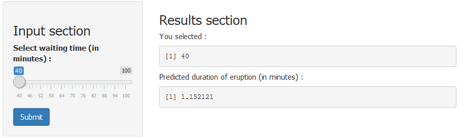

- Uses 'geyser' R dataset(eruptions data from the 'Old Faithful' geyser in Yellowstone National Park) to build a linear model on eruption duration.
- Predicts the eruption duration given the waiting time between eruptions.
- Presents predicted values of eruption and the prediction interval for the waiting time of entire dataset.
